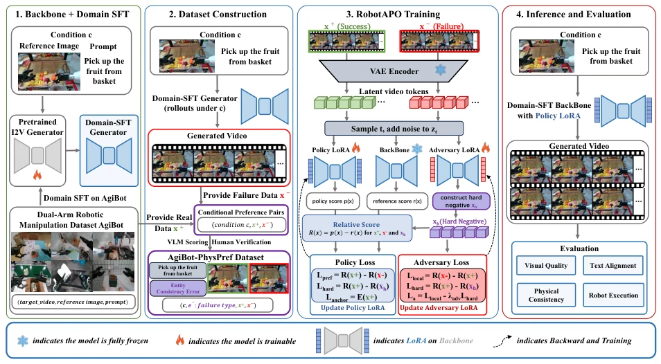
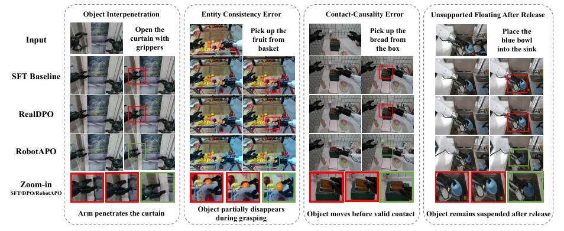

This paper pours cold water on embodied AI's "video generation": merely looking similar is useless, physical laws must be correct. The authors keenly point out that robot videos generated by existing diffusion models often reveal themselves at the "moment of contact", such as hands passing through walls, objects flying prematurely; this "physical hallucination" directly causes downstream execution to fail. RobotAPO attempts to patch these loopholes using adversarial optimization; the idea is quite bold, but essentially it is still training the generator using a "poison cures poison" approach. Although real-world experiments indeed improved success rates, that "adversarial counterfactual proposer" sounds like playing with fire; if training is unstable, the model might directly learn to "intentionally make mistakes" to deceive the discriminator. Additionally, relying on manually annotated failure samples is precise but scalability is questionable, after all, making a robot "fail perfectly" is much harder than making it succeed. Overall, this is a precise strike on the niche track of "physical consistency", but there is still a distance from a true general-purpose physical world model.
研究动机Motivation
当前基于扩散模型的机器人视频生成技术（如Vidu, Stable Video Diffusion等）虽然能生成视觉逼真的视频，但往往忽略了物理交互的脆弱性（Blattmann et al., 2023a; Team et al., 2025b）。在具身智能中，视频不仅是视觉计划，更是下游执行的依据。然而，传统的监督微调（SFT）仅关注重建视觉流形，缺乏对局部物理交互边界（如接触时机、物体穿透）的惩罚压力，导致生成的视频中常出现“手穿墙”、“物体未接触即移动”等物理违规错误（Black et al., 2023; Du et al., 2023）。这些微小的物理错误会直接导致下游机器人执行失败。现有的偏好优化方法（如Diffusion-DPO, RealDPO）多关注全局视觉质量或语义对齐，难以捕捉这种高度局部且关键的物理因果错误（Wallace et al., 2024; Cheng et al., 2025a）。因此，亟需一种机制，能够显式地识别并惩罚这些物理违规，将生成器的失败分布转化为物理一致性的优化信号。
Current robot video generation technologies based on diffusion models (such as Vidu, Stable Video Diffusion, etc.) can generate visually realistic videos, but often ignore the fragility of physical interactions (Blattmann et al., 2023a; Team et al., 2025b). In embodied intelligence, video is not only visual planning but also the basis for downstream execution. However, traditional supervised fine-tuning (SFT) only focuses on reconstructing the visual manifold, lacking penalty pressure on local physical interaction boundaries (such as contact timing, object penetration), leading to frequent physical violation errors like "hands passing through walls", "objects moving before contact" in generated videos (Black et al., 2023; Du et al., 2023). These minor physical errors will directly lead to downstream robot execution failure. Existing preference optimization methods (such as Diffusion-DPO, RealDPO) mostly focus on global visual quality or semantic alignment, making it difficult to capture these highly local and critical physical causal errors (Wallace et al., 2024; Cheng et al., 2025a). Therefore, a mechanism is urgently needed that can explicitly identify and penalize these physical violations, transforming the generator's failure distribution into optimization signals for physical consistency.
RobotAPO proposes an adversarial physical preference optimization framework in the continuous flow matching denoising space. The overall process is divided into three steps: first, construct the AgiBot-PhysPref dataset, use the SFT generator to produce 40,000 videos, screened by VLM and double-annotated by humans, screening out 10,000 pairs of "condition-matched" preference samples (successful demonstration vs. physically violated generated videos). Second, in the training phase, the framework mounts two LoRA modules on the frozen Wan2.2-TI2V backbone: Policy Generator and Adversarial Proposer. The Policy Generator is responsible for learning preferences, while the Adversarial Proposer is a training-specific module; it does not directly output videos, but learns the "physical failure direction" in the denoising space. It constructs "Hard Negatives" by mixing the policy and its own velocity prediction; these samples, while keeping global conditions unchanged, intentionally approach physical interaction boundaries, forcing the Policy Generator to correct these subtle physical errors. Finally, in the inference phase, discard the Adversarial Proposer, keep only the Policy Generator, maintaining a pure Prompt-and-Reference interface. The loss function design is clever, combining preference loss, success sample anchoring (Anchor), and regularization terms, ensuring the model corrects physical errors without destroying the original visual manifold.

Figure 1: Overview of RobotAPO. SFT rollouts are screened and annotated to build the condition-matched AgiBot-PhysPref. During post-training, an adversarial proposer learns a physical-failure-biased denoising direction to probe interaction boundaries, encouraging the policy to better respect the physical manifold. At inference, only the policy generator is deployed, maintaining a standard prompt-and-reference interface without any external structural conditioning. Displayed scores are schematic, while exact denoising rewards and objectives are defined in Sec. 3.3.
Experiments were conducted on the AgiBot dual-arm manipulation benchmark, using VideoScore2 for automatic evaluation, and real-world reproduction testing on the AgileX robot platform. Baselines include SFT, Diffusion-DPO, and RealDPO. Results show that RobotAPO improved the physical consistency hard score by 6.8% and the soft score by 10.0% compared to the strongest baseline. Most critically, in real-world pick-and-place tasks, RobotAPO's task success rate reached 64.7%, an increase of 31.4 percentage points compared to the SFT baseline (33.3%), a relative increase of 37.4%. Ablation studies show that removing the Adversarial Counterfactual Proposer (w/o CF/Adv) causes a significant drop in real-world success rate to 49.0%, proving that dynamic boundary exploration is crucial for downstream execution. Additionally, qualitative analysis shows that RobotAPO significantly reduced physical violation phenomena such as object penetration and premature motion.

Figure 2: Failure-focused qualitative comparison on held-out conditions. For each task condition, all methods generate videos with the same frame length and inference settings. We visualize frames aligned to the same action-critical phase. Red boxes highlight physics-violating phenomena (e.g., interpenetration, premature object motion) frequently produced by baselines at action-critical moments. Green boxes show that RobotAPO reduces these local interaction artifacts and better preserves gripper–object geometry and contact causality. Zoom-ins isolate the key physical interactions.